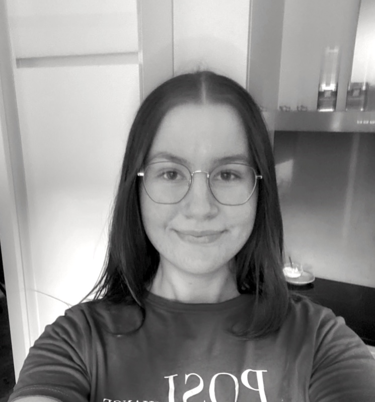

Over mij
Momenteel ben ik een tweedejaars Communication and Multimedia Design student. Wat mij drijft in mijn werk, is het creëren met een duidelijk doel voor ogen. Ik vind het belangrijk om ontwerpen te maken die echt een meerwaarde bieden voor de gebruiker. Of het nu gaat om een app of interactieve ervaring, ik wil graag iets creëren dat mensen inspireert of helpt.
Mijn ontwerpproces begint altijd met onderzoek, ik verdiep me in de doelgroep en analyseer de stijlen en onderwerpen die relevant zijn voor het project. Dit stelt me in staat om een sterke basis te leggen voordat ik aan de slag ga met schetsen en ontwerpen. Feedback speelt een belangrijke rol in mijn proces, aangezien ik mijn ideeën en ontwerpen altijd probeer te verbeteren met de inzichten van anderen.
Hoewel ik het liefst alleen werk om mijn eigen visie te volgen en zonder veel onderbrekingen door te kunnen werken, waardeer ik het ook om mijn werk te overleggen en feedback te ontvangen. Dit zorgt ervoor dat ik mijn ontwerpen verder kan verfijnen en altijd de best mogelijke gebruikerservaring kan bieden.
Wanneer ik tegen uitdagingen aanloop, neem ik soms een stap terug en kijk ik naar het probleem vanuit een nieuw perspectief. Ik ben niet bang om een andere route in te slaan en vraag gerust om feedback als ik vastloop. Mijn doel is om impact te maken met mijn ontwerpen en altijd de gebruiker centraal te stellen.
